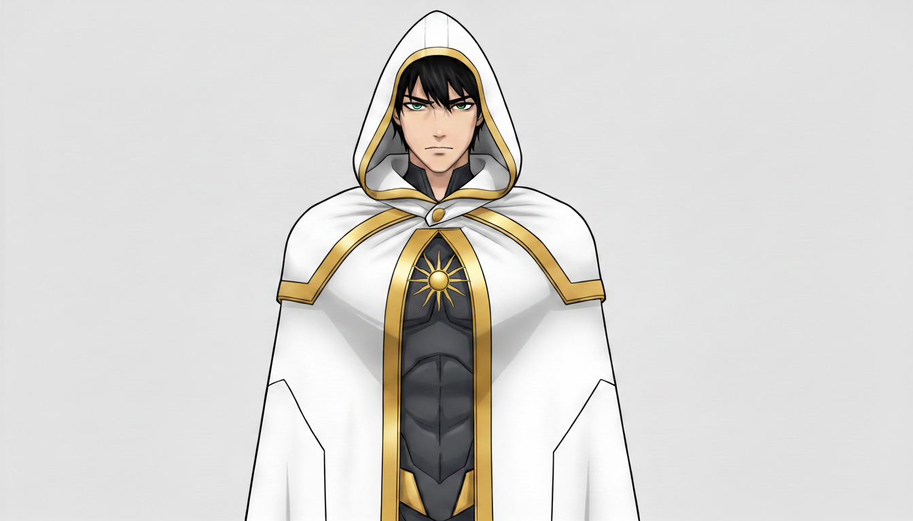

SuperheroJason James / Apollo
PLAYER CHARACTER — Do not over-document internal states or future development. This file is a GM reference for arc planning, not a character bible.
At a Glance
| Field | Value |
|---|---|
| Hero Name | Apollo |
| Civilian Name | Jason James |
| Age | [Working assumption: 18–19, senior year at time of origin] |
| A.E.G.I.S. File | AEGIS-APL-013 |
| Affiliation | Alliance — new team (Legacy of Halden City) |
| Mentor | [Unassigned as of current arc — Riftfire invited him to the team] |
| Status | Active — deteriorating. Operating on borrowed time. |
Powers
Photokinesis — light manipulation, Jason's original ability.
Shadow manipulation — Artemis's ability, absorbed at her death. Jason now holds both.
No single person was designed to carry both. The two forces battle inside him. He can feel it. The instability is not metaphor — it is a physical countdown.
Practical capability: Light-based offense and defense, shadow control with Artemis's full range of ability. The dual hold makes him formidable and unsustainable simultaneously.
Origin
Jason and Mary Matthews ("Artemis") were strangers who walked to the same bus stop for years without speaking. In their senior year, a Glass District lab explosion caught them both. The shockwave from an unknown experiment knocked them unconscious — they were still touching when it hit. They woke up changed. Powers shared in origin, complementary in function.
Light and dark. Yin and yang. Apollo and Artemis.
They became partners. They became a team. Eventually they became something closer than either had language for — not romantic, but the kind of bond that makes the word "partner" inadequate.
Mary's death: They went after Nightfall — a threat above their weight class. Nightfall identified Artemis as the greater danger; someone who could counter shadow control with shadow control. Nightfall took her down permanently. In the moment, Jason barely registered the warning Nightfall left behind. He was already kneeling next to her.
Her hair fanned out around her head. All color gone. Auburn like a broken halo.
He accepted Riftfire's invitation to join the new team because Artemis would have said yes. For no other reason, at first.
The real reason, now: He needs allies. He needs resources. He needs to find Nightfall. And he doesn't have unlimited time.
The Countdown
Masks playbook: The Doomed.
Jason has no diagnosis, no timeline, no number. What he has is a feeling — the two forces grinding against each other in a way that doesn't feel sustainable. He doesn't know if it takes a year or a month or one bad night. He doesn't know if there's a way out or if the question is already settled.
He operates as if it's settled. That's not the same as knowing.
The Doomed playbook means the question of whether the end comes — and what he does with the time before it — belongs to the player. The story's job is to give him reasons to stay in it, complications that make the mission more than a suicide run, people who matter enough to complicate the plan. Not to resolve the countdown for him.
Key Relationships
| Person | Relationship |
|---|---|
| Artemis / Mary Matthews | Deceased. His other half — literally and cosmically. The absence around which everything else orbits. |
| Nightfall / Morgan Vale | Primary target. Killed Artemis. Jason's entire reason for being on the team. |
| Riftfire / Elena Marquez | The door in. He knows her as Ms. Marquez. The shift from teacher to mentor is a dynamic worth watching. |
GM Arc Notes
What the story should give him:
- A reason to live past Nightfall, not just a reason to survive until then
- Genuine bonds with the new team that complicate the "I'm doing this alone" framing
- The question of whether Artemis would actually want this — not as cheap comfort, but as a real challenge to his operating assumptions
What to avoid:
- Resolving the countdown too quickly or too cleanly
- Making Nightfall a straightforward revenge payoff — the complexity of Morgan Vale's origin (2022 manifestation, Abandoned A.E.G.I.S. materials lab in the Ironworks) should complicate the hunt
- Letting the grief stay purely internal — it should surface in how he treats the team
Nightfall connection: Morgan Vale manifested in 2022 in an abandoned A.E.G.I.S. materials lab in the Ironworks. Whatever Nightfall is now, and whatever drove them to kill Artemis, connects back to that origin. There may be a question of whether Nightfall is fully in control of what they're doing or whether something in their manifestation is driving them.
Open Questions
- How long does he estimate he has before the dual-power instability becomes critical?
- Does anyone on the team know about the countdown yet?
- What exactly did Nightfall say as a warning before leaving — and why did it not register?
- Is there any theoretical path to stabilizing the dual hold, or has he already ruled that out?
Last updated: March 2026 Source: Player-authored origin fiction